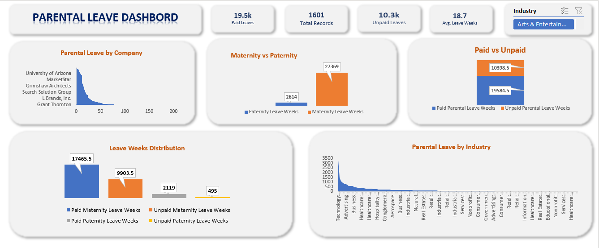

Excel / Crowdsourced company policies
Parental leave: benefit benchmarking
A comparison of paid and unpaid leave across 1,601 company records, with careful treatment of aggregate benefit weeks.

Business question
How do maternity and paternity benefits differ, and how can employers compare their leave policies responsibly? The project describes a crowdsourced dataset covering 1,601 company records.
Approach
The published workflow describes cleaning missing values, creating combined paid, unpaid, maternity and paternity leave fields, and summarizing them with Excel PivotTables. The exact treatment of missing values is not specified in the public description.
What the dashboard shows
The dashboard reports 19,584.5 aggregate paid benefit weeks and 10,398.5 unpaid benefit weeks. Maternity categories total 27,369 weeks, compared with 2,614 for paternity categories. The saved dashboard therefore shows a substantial imbalance in recorded maternity and paternity provision. These totals sum policy values across records; they are not the number of weeks received by one employee.
Recommended decisions
Benchmark a company against comparable employers using median paid weeks and the share offering each benefit. Report maternity and paternity separately, alongside missing-value coverage. For an equity review, investigate gaps between parent categories before assessing a policy change. Compare industry distributions rather than total weeks alone.
Interpretation limits
Crowdsourced records may be incomplete, outdated or unevenly distributed across industries. Larger industry samples can produce larger totals without better typical benefits. Missing policy values must remain distinct from confirmed zero entitlement. The dashboard's overall average is not a universal employee entitlement; no causal workforce outcomes are established.
Source: My original Maven Showcase project ↗. Analysis accompanies the published dashboard; source workbooks are not included.